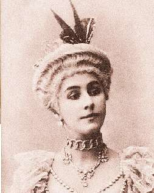

НЕКАРТОННАЯ ТАНЦОВЩИЦА
В этот день упорхнула за кулисы вечности невесомая Матильда Кшесинская (1872–1971), талисман и эстафетная палочка Романовых, воздушная балерина, проскользнувшая на пуантах мимо всех Сцилл и Харибд жуткого века.
Она побывала сердечной подругой цесаревича Николая, потом его дяди великого князя Сергея Михайловича, потом вышла замуж за великого князя Андрея Владимировича. Начинала при Чайковском, а закончила при «Роллинг стоунз», всех-всех пережила и умерла столетней — в эпоху, когда большинство ее поклонников и знакомых погибли рано и страшно.
У Андерсена в сказке про оловянного солдатика картонная танцовщица самоотверженно бросается за своим воздыхателем в печку и сгорает. Наша танцовщица ни за кем никуда не бросилась. Солдатики все сгинули, а она уцелела. И даже не бедствовала — на Лазурном берегу имелась вилла, предусмотрительно купленная еще в тучные времена.
Сегодня — день тех, кто в огне не горит и в воде не тонет. Будем им завидовать.